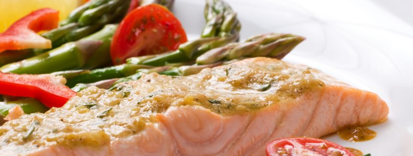

Welcome to tinkamos mitybos maistas
Tinkamos mitybos teorija | Kompetentiškai apie sveikatą iLive
2020.10.30 03:10^ Naujienos Sveikata Šeima ir vaikai Mityba ir mityba Grožis ir mada Santykiai Sportas Apie portalą
Mityba ir mityba
Sveikas maistas Vitaminai Makroelementai Hormonai ir svoris Mikroelementai Sveikos mitybos pagrindai Dietos Dieta svorio netekimas Gydomoji dieta Monodietės Greitas mityba Gydytojo dieta Žvaigždžių dietos Dietos pagal kraujo grupes Dietiniai papildai Pagrindinis » Mityba ir mityba » Sveikas maistas » Sveikos mitybos pagrindaiMedicinos ekspertas
Daktaras Maor LAHAV GastroenterologasNaujos publikacijos
Chroplastika Stazinis prostatitas Pleiskanos ausyse: kodėl jos atsiranda, kaip jas gydyti? Klavikulo lūžis naujagimiui gimdant Paracetamolis ir alkoholis: kodėl bendras vartojimas yra pavojingas? Apsinuodijimas žuvies konservais, mėsa ir daržovėmisTinkamos mitybos teorija
Aleksejus Portnovas , Medicinos redaktoriusPaskutinį kartą peržiūrėta: 01.06.2018 х
Visas „iLive“ turinys yra peržiūrėtas medicinoje arba tikrinamas, kad būtų užtikrintas kuo didesnis faktinis tikslumas.
Mes turime griežtas įsigijimo gaires ir susiejamos tik su geros reputacijos žiniasklaidos svetainėmis, akademinių tyrimų institucijomis ir, jei įmanoma, medicininiu požiūriu peržiūrimais tyrimais. Atkreipkite dėmesį, kad skliausteliuose ([1], [2] ir tt) esantys numeriai yra paspaudžiami nuorodos į šias studijas.
Jei manote, kad bet koks mūsų turinys yra netikslus, pasenęs arba kitaip abejotinas, pasirinkite jį ir paspauskite Ctrl + Enter.
Klasikinės subalansuotos mitybos teorijos pasekmė buvo keletas itin rimtų klaidų. Vienas iš jų yra idėja ir bandymai sukurti be balasto maisto. Balansuojantis požiūris ir rafinuotų (be balasto) maisto idėja, atsiradusi dėl to, akivaizdžiai sukėlė didelę žalą. Taigi, sumažėjęs vaisių ir daržovių dalį apdorotų grūdų, rafinuotų naftos produktų ir pan dietos. D. Prisidėjo prie daugelio ligų, įskaitant širdies ir kraujagyslių sistemos, virškinamojo trakto, kepenų ir tulžies takų, medžiagų apykaitos sutrikimų, nutukimo vystymuisi ir kt. Taip pat buvo padaryta klaidinga nuomonė apie mitybos optimizavimo būdus. Kitas klaida yra idėja naudoti elementinę mitybą kaip fiziologiškai visiškai pakeistą tradicinį maistą. Panašiai, niekada nedarant tiesioginės intravaskulinės mitybos negalės pateikti viso komplekso biologinio poveikio, kuris įvyksta natūralia mityba. Visiškai kitoks klausimas yra monomerų kaip maisto priedų naudojimas, o elementinės dietos laikinai yra pagrįstos medicinos rekomendacijomis ypatingomis aplinkybėmis.
Norint suprasti skirtumą tarp šių dviejų teorijų ir priežasčių, kad klasikinė teorija tampa svarbi bendresnio teorijos tinkamos mitybos skirtumai, jums reikėtų apibūdinti pagrindinius teorinius pasekmių ir praktines rekomendacijas naujos teorijos, ir palyginti juos su klasika. Išvados apie tinkamos mitybos teoriją, paskelbtos periodinėje spaudoje (Ugolev, 1986, 1987v, 1988) ir monografijose, pasirodžiusių 1985 m. Ir 1987 m.
Pagrindinės teorijos apie tinkamą mitybą postulatai
Mityba palaiko molekulinę sudėtį ir atlygina kūno energijos ir plastiko išlaidas už pagrindinį metabolizmą, išorinį darbą ir augimą (šis postulatas yra vienintelis bendras subalansuotos ir adekvačios mitybos teorijas). Normali mityba yra susijusi ne su vienu maistinių medžiagų srautu iš virškinimo trakto prie vidinės kūno aplinkos, bet ir į keletą gyvybiškai svarbių mitybos ir reguliavimo medžiagų srautų. Būtini maisto komponentai yra ne tik maistinės medžiagos, bet ir balastinės medžiagos. Metaboliniame ir ypač trofiniame ryšyje įsisavinantis organizmas yra superorganizmo sistema. Yra organizmo šeimininko endoekologija, kurią sudaro žarnyno mikrofloros, su kuriomis hostinis organizmas palaiko sudėtingus simbioninius santykius, taip pat žarnyno ar enteralinės aplinkos. Maistinių medžiagų balansas organizme yra pasiekiamas per maistinių medžiagų iš maisto struktūros fermentinio skilimo jos makromolekulių išleidimo dėl to, kad ertmės ir membranos virškinimą, ir kai kuriais atvejais - ląstelėje (pagrindinių maistinių), ir taip pat dėl to, kad naujų medžiagų sintezės, įskaitant pagrindinius bakterinės floros žarnos (antrinės maistinės medžiagos). Santykinis pirminių ir antrinių maistinių medžiagų vaidmuo labai skiriasi.Leiskite mums šiek tiek išsamiau apibūdinti kai kuriuos iš šių postulatų.
Kaip matote, tinkamos mitybos teorijos pagrindiniai poelitai iš esmės skiriasi nuo subalansuotos mitybos teorijos. Tačiau vienas iš jų yra bendras. Tai reiškia, kad maistas palaiko organizmo molekulinę sudėtį ir užtikrina jos energijos ir plastiko poreikius.
Be to, žmogus ir aukštesni gyvūnai, turintys metabolinius ir trofinius ryšius, nėra organizmai, o iš esmės supraorganizminės sistemos. Pastarieji apima ne tik makroorganizmą, bet ir jo virškinamojo trakto mikroflorą - mikroekologiją ir enterinę aplinką, kuri sudaro organizmo vidinę ekologiją arba endoekologiją. Tarp priimančiojo organizmo ir jo mikroekologijos palaikomi teigiami simbioziniai santykiai.
Tinkamos mitybos teorija, o ne subalansuotą mitybą teorijos jungiasi ne tik įprastą maistą ir pasisavinimą maisto su viena gija į vidaus aplinką įvairių maistinių medžiagų, yra išleistas maisto virškinimui virškinimo trakto, bet ir prisiima egzistavimą bent trys Kitas svarbus esminis srautai Kilmė - srautas reguliavimo medžiagų (hormonų ir hormonų-kaip junginius), pagaminti pagal endokrininių ląstelių virškinamojo trakto ir taip pat susiformavo jo turinį. Antrasis srautas susideda iš bakterijų metabolitų. Joje yra maisto ir maistinių medžiagų balastinės medžiagos, modifikuotos žarnyno bakterijų floros, taip pat jo gyvybinės veiklos produktai. Su šiuo srautu antrinės maisto medžiagos patenka į vidinę kūno aplinką. Ji taip pat apima toksinių medžiagų, kurios apima maisto toksinus ir toksinių susiformavusių virškinimo trakte dėl to, kad bakterinės floros veiklos. Matyt, šis srautas paprastai yra fiziologinis. Trečiąjį srautą sudaro medžiagos, gaunamos iš užteršto maisto ar užterštos aplinkos, įskaitant ksenobiotikus. Galiausiai, remiantis tinkamos mitybos teorija, vadinamosios balasto medžiagos, įskaitant daugiausia dietinius pluoštus, yra evoliuciškai svarbi maisto sudedamoji dalis.
Visi tinkamos mitybos teorijos postulatai yra tarpusavyje susiję ir sudaro naujų ir netradicinių reprezentacijų, metodų, tyrimų metodų ir metodų rinkinį.
Kartais tinkamos mitybos teorija yra kritikuojama dėl pernelyg "virškinimo". Tai ne taip - tai yra biologinė ir technologinė, ty ji teikia didelę reikšmę mechanizmų, užtikrinančių maisto asimiliaciją, veikimo evoliucinėms funkcijoms ir ypatybėms. Šis metodas leidžia mums apsvarstyti keletą problemų, kurios klasikinės teorijos požiūriu nebuvo tinkamai įvertintos, bet yra svarbios iš trofologijos požiūriu.
Mobiliosios svetainės versija iLive portāls nesniedz medicīnisku padomu, diagnostiku vai ārstēšanu.
Portālā publicētā informācija ir tikai atsauce, un to nedrīkst izmantot, konsultējoties ar speciālistu.
Uzmanīgi izlasiet vietnes noteikumus un politiku . Taip pat galite susisiekti su mumis !
Autortiesības © 2011 - 2020 iLive. Visas tiesības aizsargātas.
Next page
You are reporting a typo in the following text: Simply click the "Send typo report" button to complete the report. You can also include a comment.